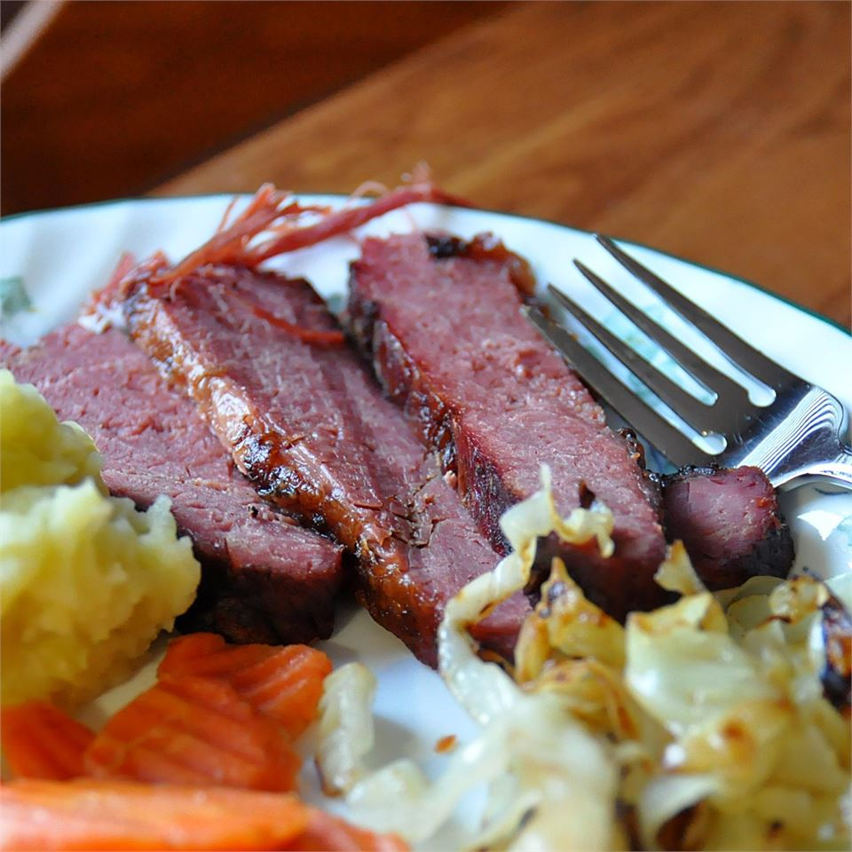

Braised Corned Beef Brisket

Ingredients
- (5 pound) flat-cut corned beef brisket
- 1 tablespoon browning sauce (such as Kitchen Bouquet®), or as desired
- 1 tablespoon vegetable oil
- 1 onion, sliced
- 6 cloves garlic, sliced
- 2 tablespoons water
Steps
- Preheat oven to 275 degrees F (135 degrees C).
- Discard any flavoring packet from corned beef. Brush brisket with browning sauce on both sides. Heat vegetable oil in a large skillet over medium-high heat and brown brisket on both sides in the hot oil, 5 to 8 minutes per side.
- Place brisket on a rack set in a roasting pan. Scatter onion and garlic slices over brisket and add water to roasting pan. Cover pan tightly with aluminum foil.
- Roast in the preheated oven until meat is tender, about 6 hours.